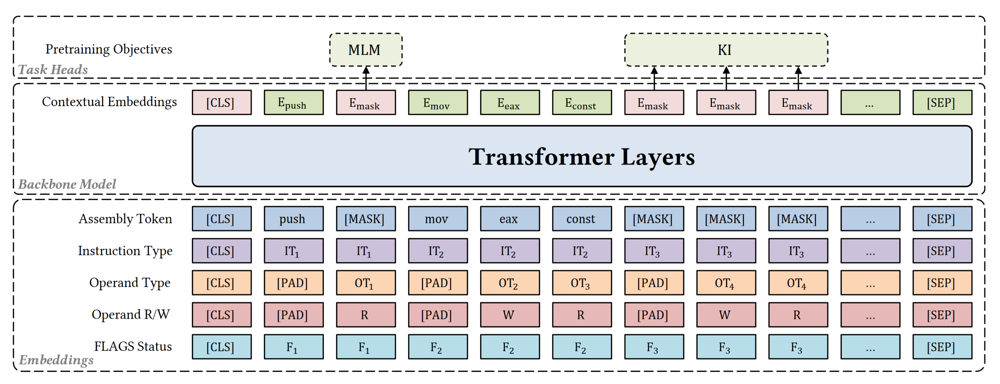
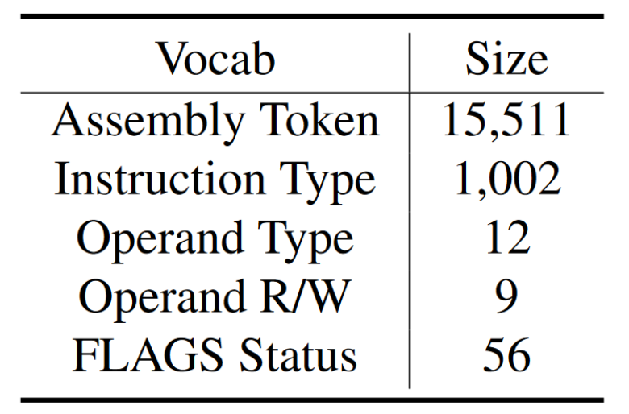
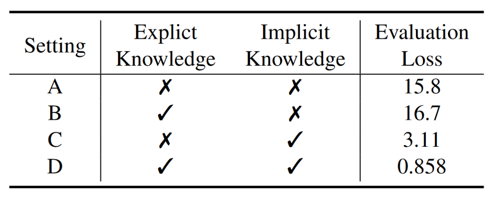
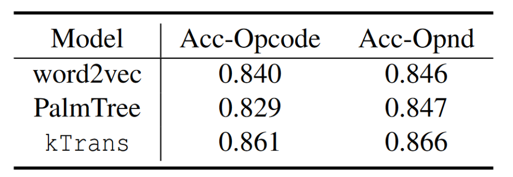

kTrans: Knowledge-Aware Transformer for Binary Code Embedding
Binary Code Embedding（BCE）在二进制代码相似性检测、类型恢复、控制流恢复、数据流恢复等场景应用广泛。SOTA普遍使用Transformer模型理解二进制代码语义，但忽略了汇编语言的先验知识。kTrans将explicit knowledge作为Transformer的额外输入，并将implicit knowledge与新的预训练任务结合，生成BCE。kTrans在三个下游任务（二进制代码相似性检测BCSD、函数类型恢复FTR和间接调用识别ICR）中表现出色。
现有方案不足
- 现有方案缺乏对二进制代码先验知识的利用。只是将二进制代码视为自然语言，缺乏对ISA知识的利用，例如自然语言模型会将rax、eax、ax和al视为独立的标记。
- 现有方案缺乏对指令的理解，因此无法为程序执行行为建模。现有方案对指令边界缺乏认识，无法区分[‘pop’,‘rbp’]和[‘rbp’,‘pop’]。
- 现有方案缺乏对二进制代码中的隐式依赖关系的建模，如EFLAGS。
模型架构
kTrans由三个主要模块组成：

-
Embedding module
-
Assembly token embedding
首先对指令做normalize避免OOV问题：
- 将助记符和操作数视为token。
- 将所有常量替换为const。
- 删除操作数之间的逗号。

构建词汇表，引入了special tokens：[CLS]、[SEP]、[PAD]、[UNK]。[CLS]作为assembly function的开始，[SEP]作为结尾。
-
Explicit knowledge embedding
基于ISA构建了多个knowledge sequences，使用了4类explicit knowledge：
opcode type、operand type、operand read/write status、FLAGS register status。针对每种类型分别建立词汇表，并添加special tokens。 -
Final embedding $$ E_{knowledge}=E_{InstructionType}+E_{OperandType}+E_{OperandRW}+E_{FLAGS} $$
$$ E=E_{token}+E_{knowledge}+E_{position} $$
-
-
Backbone model
以E作为输入，利用Transformer模型整合各种embedding，生成contextual embedding。
-
Task head module
- MLM：随机选取15%的token进行mask，其中80%被替代为[MASK]，10%替代为随机token，10%保持不变。
- Knowledge Integration(KI)：随机选取15%的指令进行mask，对应的token被替代为[MASK]。
总损失为两个预训练任务损失之和。
Evaluation
-
RQ1：How does kTrans perform in modeling assembly language?
使用困惑度（perplexity）评估kTrans、word2vec和PalmTree对汇编语言建模的效果。对每种模型在训练集上训练3个epoch，在测试集上计算perplexity。
-
RQ2: What is the Impact of the KnowledgeAware Design?
设计消融实验评估knowledge injection对模型能力的影响。
- (A) Original Transformer
- (B) Transformer with explicit knowledge
- (C) Transformer with implicit knowledge
- (D) Transformer with explicit and implicit knowledge
实验结果：

-
对比(A,C)和(B,D)，KI任务引入的implicit knowledge能显著降低模型损失，提升模型能力。
-
对比(A,B)，引入explicit knowledge会导致损失略微增加，可能是因为只在MLM任务中引入explicit knowledge导致过拟合。
-
对比(C,D)，引入KI任务后，模型损失显著下降。
-
RQ3: How is the quality of the embeddings generated by kTrans?
-
离群点检测（Outlier Detection）
论文对操作码离群检测和操作数离群检测进行评估，从测试集二进制文件中构建指令集，并对50000组数据进行采样
- 操作码离群检测：每组数据包含4条操作码相同指令和一条操作码不同指令。
- 操作数离群检测：每组数据包含4条操作数类型相同指令和一条操作数类型不同指令。

-
t-SNE可视化定性分析
基于测试集二进制文件构建了一个指令集，并从8个常见指令类别中各抽取30个实例，使用t-SNE观察它们的embedding分布。
-
-
RQ4: Can kTrans effectively improve the performance of downstream tasks?
-
BCSD
Gemini、word2vec、jTrans-zero、kTrans-zero、PalmTree、jTrans、kTrans
-
FTR
EKLAVYA(word2vec)、PalmTree、kTrans-zero、kTrans
-
ICR
CALLEE(doc2vec)、word2vec、PalmTree、kTrans-zero、kTrans
-
未来方向
-
Larger Domain Models
-
Cost-Effective Models
- 使用小规模特定二进制数据集对大型通用数据集上的预训练模型进行微调。
- teacher-student paradigm，训练一个较小的简单模型（student）让其向一个较大的复杂模型（teacher）学习。
-
Combination with General Large Language Models
将GPT4这类大模型与binary embedding结合，从大模型的上下文理解和语言建模能力中获益。